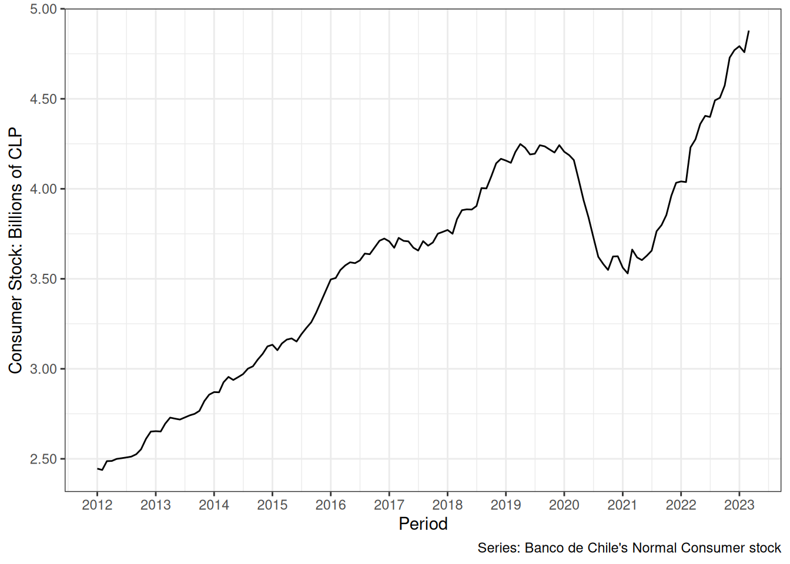
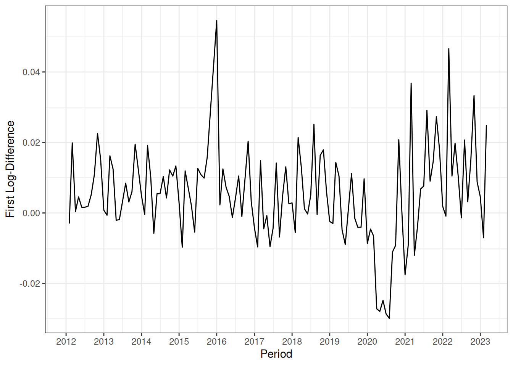
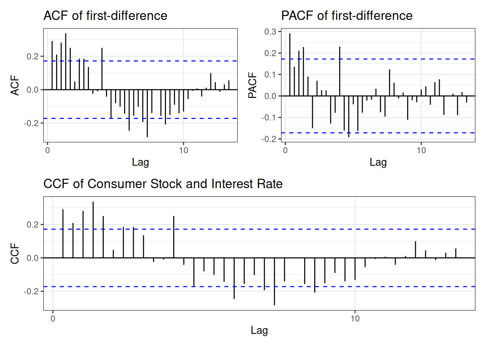

Forecasting: Banco de Chile’s Consumer Stock
R
Statistics
Time Series
Forecasting
Forecasting through classic SARIMA and SARIMAX models
Context
The normal consumer stock (NCS) of a bank represents the amount of money that regular consumers invest in consumer credit. In this particular case, it is measured in Chilean Pesos (CLP). In this particular case, monthly NCS values were downloaded from xxxxx time series data bank. We also scraped the Monthy Index of Economic Activity (IMACEC), and the Interest Rate of the Central Bank of Chile.
Stationarity
We can talk about stationarity in time series in two ways, stationarity of the mean and stationarity of the variance. Stationarity of the mean means that the values are around a mean \(\mu\), or a fixed value, while variance means that the spread around that mean is even and there’s no periods where it increases or decreases. Many times this assumptions are not met, which means that we need to evaluate our time series a bit differently. We can assess the stationarity of the mean and variance of the first difference, and see if the mean stabilizes and then if the variance continues to be heteroskedastic, we can apply a transformation (sqrt, log, etc) to the original series and then evaluate the first difference.
To assess this, the quickest and simplest way to do is to look at a graph of the series and, as we can see here, this is a non-stationary time-series, both in variance and mean.
In this particular case, variance was stabilized via log-transformation, and the first difference was stationary in mean:

We can see that despite transformations and first-difference there are some breaks on our time series, which will influence the outcome of the classical SARIMA model.
Auto Correlations, Partial Auto Correlations, Cross Correlations
ACF and PACF plots helps us decide the initial values for the SARIMA part of the model, while CCF helps us check the extent of the correlation between our covariates that we’ll use for forecasting.

Our PACF and ACF plots suggest an SARIMA structure, we’ll consider an ARIMA (3,1,1) and a SARMA (3,0,1) and since this is monthly data we’ll consider quarterly seasonality.
For the SARIMAX model, same ARIMA and SARMA parts were considered, but our covariates included the ln of IMACEC and ln of the Interest Rate for Consumer credits, both lagged by 12 months. This decision came from noticing the CCF plot which showed relevant correlations 12 months in the past, as well as noticing that only the marginal effects (or interaction) between the two covariates was the most relevant part.
Since the lagged product was the most relevant part, we modeled the product as the sum of logarithms.
Evaluation
We can see that while the SARIMA model maintains the proper shape, but the trend is off. In the case of the SARIMAX model, our covariates fix that trend through a linear regression.
And our model evaluation, which considering we’re only using two covariates + time, is relatively good.
| Model | RMSE | MAE | MPE | MAPE | MASE | ME |
|---|---|---|---|---|---|---|
| SARIMA | 125657.04 | 117211.93 | -2.4% | 2.4% | 1.98236 | -117211.93 |
| SARIMAX | 41968.47 | 34211.05 | -0.5% | 0.7% | 0.57860 | -24576.02 |